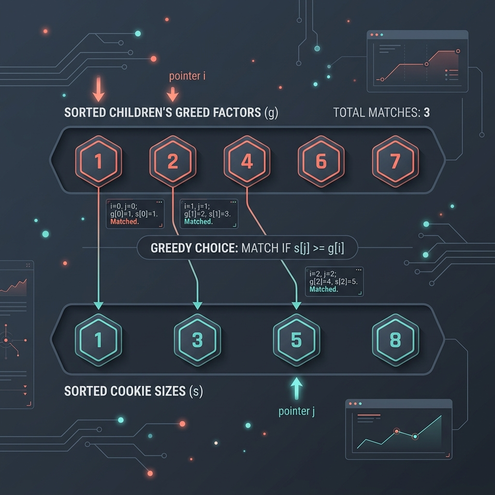

Introduction & Problem Explanation
The Assign Cookies problem describes a scenario where you want to maximize the number of content children using cookies of different sizes. Each child i has a greed factor g[i], which is the minimum size of a cookie that the child will be content with. Each cookie j has a size s[j]. If s[j] >= g[i], we can assign the cookie j to the child i, making that child content.
Our goal is to output the maximum number of content children. We cannot assign more than one cookie to a single child, nor can we satisfy a child with a cookie that is smaller than their greed factor.
For example:
- Children greed:
g = [1, 2, 3] - Cookies size:
s = [1, 1]
1.

Imagine you have a group of kids with different shoe sizes (greed factors) and a donation box of shoes of various sizes. If a kid wears a size 6, they can wear size 6, 7, or 8 shoes, but not a size 5. To make as many kids happy as possible, you sort the kids from the smallest feet to the largest, and you sort the shoes from smallest to largest. You take the kid with the smallest feet and search for the smallest shoe that fits them. If it fits, you give it to them and move to the next kid. If a shoe is too small even for the kid with the smallest feet, that shoe is useless, so you discard it and try the next shoe size.
The Algorithmic Approach
Two-Pointer Greedy Search (O(n log n) Time, O(1) Space)
A greedy approach works optimally here. To maximize content children, we should avoid wasting large cookies on children with small greed factors. Here is our approach:
- Sort: Sort both arrays:
g(children's greed) ands(cookie sizes) in ascending order. - Two Pointers: Initialize two pointers:
child = 0andcookie = 0. - Match Pointers: We loop while
child < g.lengthandcookie < s.length:- If the cookie size satisfies the child (
s[cookie] >= g[child]), it means we have successfully made this child content. We increment ourchildpointer to evaluate the next child. - Regardless of whether the cookie satisfies the child or not, we increment the
cookiepointer because a cookie that cannot satisfy the current child (who has the lowest greed among remaining unsatisfied kids) can never satisfy any subsequent child with a higher greed factor.
- If the cookie size satisfies the child (
child pointer is our maximum number of satisfied children. Sorting takes O(n log n + m log m) time, and the two-pointer loop runs in linear O(n + m) time.
Step-by-Step Execution Walkthrough
Let's trace the algorithm with children greed g = [1, 2] and cookies s = [1, 2, 3]:
- Step 1 (Sorting): g and s are already sorted:
g = [1, 2],s = [1, 2, 3]. - Step 2 (Initialize):
- Pointers:
child = 0,cookie = 0.
- Pointers:
- Step 3 (Iteration 1: child = 0, cookie = 0):
- Compare:
s[0] (1) >= g[0] (1). Match! - Increment
childto 1. - Increment
cookieto 1.
- Compare:
- Step 4 (Iteration 2: child = 1, cookie = 1):
- Compare:
s[1] (2) >= g[1] (2). Match! - Increment
childto 2. - Increment
cookieto 2.
- Compare:
- Step 5 (Termination): The loop terminates because
child (2) == g.length. We returnchild = 2.
Key Code Snippets & Explanations
Here is why the main logic in the solution is important:
Arrays.sort(g); Arrays.sort(s);: Chronological ordering ensures that we match the smallest greed with the smallest sufficient cookie, preserving larger cookies for kids with larger greed factors.if (s[cookie] >= g[child]) child++;: If the cookie is large enough, the child pointer shifts forward, signifying a successful match. If not, the child pointer remains on the same child to wait for a larger cookie.cookie++;: Discards the current cookie in each iteration, either because it was successfully eaten or because it was too small to satisfy anyone.
Java Implementation Code
Below is the complete, self-contained Java source code that solves this problem. It also includes a main method that traces the execution with console outputs.
package io.practise.dsa;
import java.util.Arrays;
public class AssignCookies {
// Sorting & Two Pointers: Time O(N log N + M log M), Space O(1)
public int findContentChildren(int[] g, int[] s) {
if (g == null || s == null) {
return 0;
}
// Sort children greed and cookie sizes
Arrays.sort(g);
Arrays.sort(s);
int child = 0;
int cookie = 0;
// Try matching the smallest greed with the smallest sufficient cookie
while (child < g.length && cookie < s.length) {
if (s[cookie] >= g[child]) {
child++; // Successfully satisfied this child, move to next child
}
cookie++; // Move to evaluate the next cookie
}
return child;
}
public static void main(String[] args) {
AssignCookies solver = new AssignCookies();
int[] g = {1, 2, 3}; // Greed factors of children
int[] s = {1, 1}; // Cookie sizes
System.out.println("--- Assign Cookies Demonstration ---");
System.out.println("Children Greed Factors: " + Arrays.toString(g));
System.out.println("Available Cookie Sizes: " + Arrays.toString(s));
int contentChildren = solver.findContentChildren(g, s);
System.out.println("Maximum satisfied children: " + contentChildren); // Expected: 1
}
}
Conclusion
Assign Cookies is a classic greedy problem. By sorting the arrays, we align our resources and requirements from smallest to largest, ensuring that we satisfy the maximum number of children without wasting larger cookies on smaller greed factors.